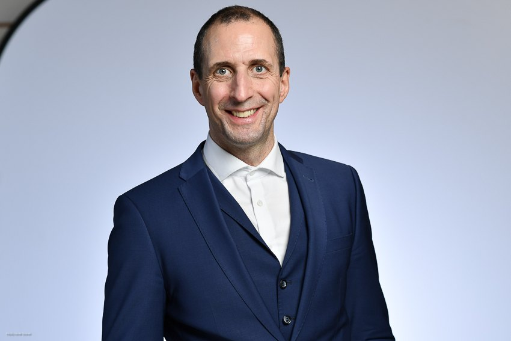
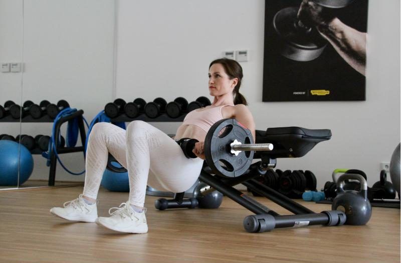
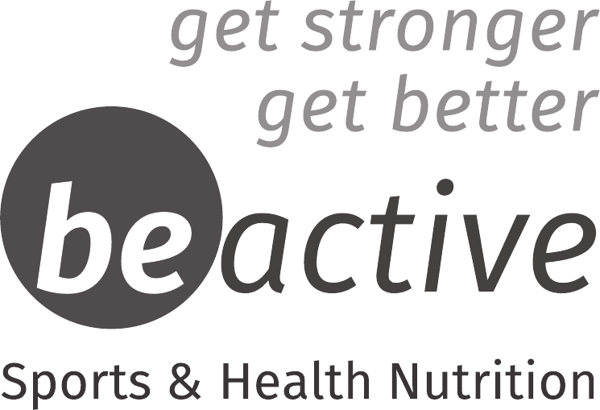
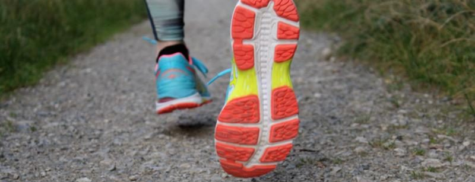
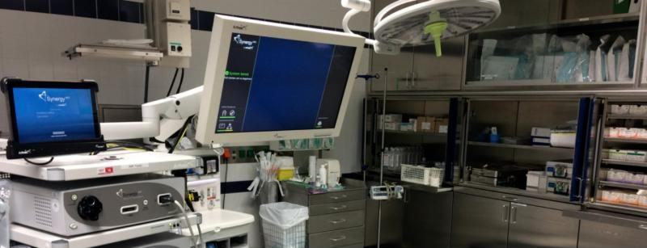

LaufSport- & GelenksPraxis
Prävention, Diagnostik und Therapie von Sportverletzungen sowie Beschwerden und Überlastungen des Bewegungsapparates – bei Erwachsenen und Kindern.
5,0 ★★★★★Patientenbewertung auf DocFinder ↗Dr. med. Sven Thomas Falle-Mair
Als Facharzt für Unfallchirurgie und Sporttraumatologie, Sport- und Manualmediziner, ausgebildeter Gang- und Laufanalyst sowie Experte im Bereich der rehabilitativen Medizin sind meine Schwerpunkte einerseits die Prävention, Diagnostik und Therapie sowohl von (Sport)verletzungen als auch muskuloskeletalen sowie chronisch/degenerativ bedingten Beschwerden und Überlastungen des Bewegungsapparates bei Erwachsenen und Kindern.
Meine Spezialgebiete sind vor allem (Sport)verletzungen, funktionell und biomechanisch bedingte (Überlastungs-)beschwerden im Bereich des Lauf- und Ausdauersports sowie die konservativ rehabilitative Medizin und systemische Gesundheit.
Durch meine jahrelange fachspezifische Erfahrung als Unfallchirurg und Sporttraumatologe im In- und Ausland, als Oberarzt im öffentlichen Spitalswesen, meine Expertise auf dem Gebiet der konservativen und operativen Therapie, die sportmedizinische Betreuung nationaler und internationaler Profisportler und Vereine aus den unterschiedlichsten Sportbereichen, meine berufliche Expertise im Rehabilitationsbereich sowie mein Engagement in Weiterbildung und Lehre kann ich individuell auf jeden Patienten eingehen und Ihnen die effizientesten und optimalsten Therapieoptionen – konservativ und operativ – anbieten.

Lauf- & Ausdauer-/Sport und Gelenke – unter einem Dach
LaufSportPraxis
(Sport)verletzungen sowie funktionell und biomechanisch bedingte Überlastungsbeschwerden im Lauf- und Ausdauersport, Gang- und Laufanalyse.
Mehr erfahren →GelenksPraxis
Erkrankungen, Beschwerden und Verletzungen von Gelenken und des Bewegungsapparates – Wirbelsäule, Schulter, Hüfte, Knie und Sprunggelenk.
Mehr erfahren →Moderne Diagnostik & Therapie
Muskuloskeletale Ultraschalldiagnostik, autologe Wachstumsfaktoren bei Arthrose und Sportverletzungen, Hochleistungsultraschalltherapie.
Mehr erfahren →Meine LaufSport- & GelenksPraxis ist seit 01.08.2021 Teil der Arthromed+ Praxisgemeinschaft.
Für einen aktiven, gesunden Alltag

Bewegung, Prävention & Lebensstil
Gemeinsam mit Vera Mair, Gesundheitsconsulting, finden Sie Unterstützung für einen aktiven, gesunden Alltag – von individueller Bewegungsberatung bis zu praxisnahen Impulsen für Prävention, Regeneration und Wohlbefinden.
Mehr erfahren → www.gesundheitsconsulting.atDie Gesundheitsexperten
Bewegung, Prävention, Ernährung und ein gesunder Lebensstil – inspirierende Impulse von Vera & Doc Tom.
Zur Website → diegesundheitsexperten.com
Unterstützung für Gelenke, Muskeln & Regeneration
Entdecken Sie Produkte von BE ACTIVE rund um Bewegung, Training, Regeneration und eine aktive Lebensweise.
Zum Onlineshop → be-active.atDr. med. Sven Thomas Falle-Mair
Facharzt für Unfallchirurgie und Sporttraumatologie · Sport- und Manualmediziner · Gang- und Laufanalyst
Dr. med. Sven Thomas Falle-Mair ist Facharzt für Unfallchirurgie und Sporttraumatologie.
Durch seine fachspezifische, sportorthopädische, manualtherapeutische und sporttraumatologische Ausbildung im In- und Ausland, jahrelange Erfahrung als Oberarzt im öffentlichen Spitalswesen sowie Expertise auf dem Gebiet der konservativen und operativen Gelenkstherapie geht er individuell auf jeden Patienten ein und kann Ihnen somit die jeweils effizientesten und optimalsten Therapieoptionen – konservativ, rekonstruktiv und endoprothetisch – anbieten.
Dr. Sven Thomas Falle-Mair wurde im Zeitraum von 2017 bis 2026 als einer der „Beliebtesten Ärzte“ im Bereich Unfallchirurgie von Docfinder.at ausgezeichnet und erhielt 2021 und 2026 das Gütesiegel „Beliebter Arzt“ der Mediaprint im Bereich Unfallchirurgie. 2026 wurde er außerdem in der Studie „Beliebte Ärzte 2026“ von KURIER und IMWF im Bereich Orthopädie, Unfallchirurgie und Physikalische Medizin für Niederösterreich ausgezeichnet.
Bewertungen auf DocFinder ansehen ↗Vita & Ausbildung
Werdegang
- 1975in Wien geboren
- StudiumMedizinstudium an der Leopold-Franzens-Universität Innsbruck
- FacharztausbildungUnfallchirurgie und Sporttraumatologie u. a. an der Universitätsklinik Innsbruck (Schwerpunkt Wirbelsäulenchirurgie, Spine Center Innsbruck), am Bezirkskrankenhaus Hall in Tirol, an der Orthopädischen Klinik München-Harlaching (FIFA Medical Centre of Excellence, Schwerpunkt Hüft- und Kniechirurgie) sowie im Krankenhaus der Barmherzigen Brüder in Eisenstadt (Schwerpunkt Schulter- und Kniechirurgie)
- seit 2011Selbständige freiberufliche fachärztliche Tätigkeit in der LaufSport- & GelenksPraxis
- 2011–2016Oberarzt an der Abteilung für Unfallchirurgie & Sporttraumatologie im Landes- & Thermenklinikum Mödling/Baden
- 2017–2018Facharzt für Unfallchirurgie im AUVA Rehabilitationszentrum Weißer Hof
- 2018–2021Primar und Ärztlicher Direktor im Orthopädischen OptimaMed Rehabilitationszentrum Perchtoldsdorf
- 2020–2025Medizinischer Direktor OptimaMed; Medical Director SeneCura Group – ORPEA Cluster CEE
- 2021–2025Operativer und Medizinischer Direktor OptimaMed
- seit 2025Pensionsversicherungsanstalt (PVA): Leitung Strategie & Business Development
- Gastarzt/HonorararztLangjährige Gastarzttätigkeiten in der Tagesklinik Medalp Imst (Zentrum für ambulante Chirurgie), Sportsclinic Sölden und Sportsclinic Austria in Innsbruck mit Schwerpunkt Gelenkschirurgie
Zusatzausbildungen
- Sportmedizin (ÖÄK-Diplom)
- Notfallmedizin (ÖÄK-Diplom), zertifizierter ATLS-Provider
- Manuelle Therapie (ÖÄK-Diplom)
- Ernährungsmedizin (ÖÄK-Diplom)
- Akupunktur und TCM
- Medi-Taping
- Zertifizierter Gang-, Lauf- und Bewegungsanalyst
- Functional Movement Screen (FMS) Zertifizierung
Sportmedizinische Betreuung
- 2007–2009: medizinischer Betreuer des Fußballbundesligisten FC Wacker Tirol und des ÖSV-Nachwuchsteams
- 2010–2012: Arzt des Österreichischen Ringsportverbandes
- 2011: medizinischer Betreuer des U-19 ÖFB-Nationalteams
- seit 2011: medizinischer Betreuer zahlreicher nationaler und internationaler Profisportler aus dem Lauf- und Triathlonbereich sowie Kampfsport (MMA)
Wissenschaftliche Tätigkeiten
Diagnostik, Therapie und Prävention
Wir bieten Ihnen eine umfassende Diagnostik und konservative sowie gegebenenfalls operative Therapieoptionen bei degenerativen Veränderungen, akuten und chronischen Beschwerden sowie Verletzungen und Schmerzen des Bewegungsapparates und der Gelenke.
Sportverletzungen & Überlastungen
Prävention, Diagnostik und Therapie von (Sport)verletzungen sowie funktionell und biomechanisch bedingten (Überlastungs-)beschwerden im Bereich des Lauf- und Ausdauersports – bei Erwachsenen und Kindern.
- Unfallchirurgie und Sporttraumatologie
- Lauf- & Bewegungsanalyse, Functional Movement Screen (FMS)
- Trainingsplanung und -steuerung
- Ernährung und Supplementierung
- Bewegungstherapien
- Vereinsbetreuung

Gelenke und Bewegungsapparat
Die GelenksPraxis ist Ihre Ordination mit Schwerpunkt für Erkrankungen, Beschwerden und Verletzungen von Gelenken und des Bewegungsapparates. In meiner Ordination stehen Sie als PatientIn im Mittelpunkt – ich nehme mir die Zeit für Sie, die Sie brauchen.
Zusätzlich stehen funktionelle, Bewegungs-, Kräftigungs- und Mobilisationstherapien zur Rehabilitation und Prävention von Beschwerden des Bewegungsapparates im Mittelpunkt:
Osteoporose
Bewegungstherapien und Training bei und zur Vorbeugung von Osteoporose
Bewegung im Alter
Bewegung und Fitness im Alter, Bewegung als Anti-Aging-Maßnahme
Prävention
Vorbeugung von Zivilisationsbeschwerden und -erkrankungen, Bewegung als Prävention von Herz-Kreislauf-Erkrankungen
Arthrose
Bewegung und Sport bei Arthrose
Künstliches Gelenk
Sport mit künstlichem Gelenk
Operative Therapie
Konservativ, rekonstruktiv und endoprothetisch – individuell abgestimmt
Muskuloskelettale Beschwerdebilder in der Perimenopause und Menopause
Individuelle orthopädische Abklärung bei Gelenk-, Muskel- und Sehnenbeschwerden in den Wechseljahren.

Modernste Methoden und Geräte
In unserer Ordinationsgemeinschaft stehen Ihnen unter anderem modernste Methoden und Geräte für Diagnostik und Therapie zur Verfügung:
- Muskuloskeletale Ultraschalldiagnostik
- Behandlung mit autologen Wachstumsfaktoren bei Arthrose und Sportverletzungen
- Hochleistungsultraschalltherapie bei Sehnen- und Faszienpathologien
Wahlarztordination
Unsere Praxis ist eine Wahlarztordination (Privatarzt) und steht in keinem direkten Vertragsverhältnis zu den Krankenkassen. Aus diesem Grund ist das Behandlungshonorar für Ihre Termine und Behandlungen bei uns von Ihnen vollständig zu bezahlen.
Behandlungskosten
Die Behandlungskosten richten sich nach dem individuell notwendigen zeitlichen Aufwand und den durchgeführten Behandlungen. Die Rechnung wird Ihnen nach Ihrem Termin per Mail von unserem Sekretariat zugesendet und kann bequem per Online-Banking oder Zahlschein beglichen werden.
Kostenrückerstattung
Die Rechnung kann im Anschluss bei der Krankenkasse bzw. Ihrer privaten Zusatzversicherung eingereicht werden. Pflichtversicherungen übernehmen – wenn überhaupt – nur einen sehr geringen Kostenanteil der Honorarnote für die angefallenen Leistungen.
Überweisung & Rezepte
Eine Überweisung von einem anderen Arzt ist nicht notwendig. Rezepte und Verordnungen werden von Apotheken und Bandagisten wie Kassenrezepte behandelt. Für einige Leistungen (z. B. chefarztpflichtige Medikamente, MRT- und CT-Überweisungen, teilweise Heilbehelfe) ist vorab eine Genehmigung des Chefarztes Ihrer Pflichtversicherung einzuholen.
Operationen
Etwaige notwendige Operationen werden in der Privatklinik Döbling, der Privatklinik Goldenes Kreuz, der Privatklinik Confraternität und der Atomos Klinik Währing von Dr. Falle-Mair persönlich durchgeführt und können über Ihre ggf. vorhandene Privat- oder Zusatzversicherung direkt abgerechnet werden.
So erreichen Sie uns
Termine nur nach Vereinbarung – telefonisch oder bequem online.
LaufSport- & GelenksPraxis
Dr. med. Sven Thomas Falle-Mair
c/o Arthromed+ Praxisgemeinschaft
Bahnstraße 2
2345 Brunn am Gebirge / Niederösterreich
🚗 Parken
Markierte Praxisparkplätze stehen im Innenhof vor der Praxis kostenlos zur Verfügung.
🚆 Öffentlich
Die Schnellbahnstation Brunn / Maria Enzersdorf ist 5 Minuten zu Fuß entfernt.
Barrierefreier Zugang: stufenlos bzw. über Rampe.
Route planen ↗
Impressum
Informationen gemäß § 5 E-Commerce-Gesetz (ECG), § 14 Unternehmensgesetzbuch und Offenlegung gemäß § 25 Mediengesetz
Medieninhaber und Diensteanbieter
Dr. med. Sven Thomas Falle-Mair
LaufSport- & GelenksPraxis
c/o Arthromed+ Praxisgemeinschaft
Bahnstraße 2, 2345 Brunn am Gebirge, Österreich
Telefon: +43 699 101 687 01
E-Mail: office@laufsportundgelenkspraxis.at
UID-Nummer: ATU68040522
Gerichtsstand: Wien
Berufsbezeichnung und berufsrechtliche Angaben
Berufsbezeichnung: Facharzt für Unfallchirurgie und Sporttraumatologie (verliehen in Österreich)
Kammerzugehörigkeit: Ärztekammer für Niederösterreich [bitte bestätigen]
Aufsichtsbehörde: Ärztekammer für Niederösterreich bzw. Bezirkshauptmannschaft Mödling [bitte bestätigen]
Berufsrechtliche Vorschriften: Ärztegesetz 1998 (ÄrzteG), abrufbar unter www.ris.bka.gv.at
Grundlegende Richtung des Mediums
Information über das Leistungsangebot der LaufSport- & GelenksPraxis.
Haftung für Inhalte
Die Inhalte dieser Website wurden mit größter Sorgfalt erstellt. Für die Richtigkeit, Vollständigkeit und Aktualität der Inhalte kann jedoch keine Gewähr übernommen werden. Die Inhalte ersetzen keine persönliche ärztliche Untersuchung und Beratung.
Haftung für Links
Für die Inhalte externer Links wird keine Haftung übernommen, da kein Einfluss darauf besteht und dafür der jeweilige Anbieter bzw. Seitenbetreiber verantwortlich ist. Bei Bekanntwerden von Rechtsverletzungen werden derartige Links umgehend entfernt.
Urheberrecht und Bildnachweis
Die Inhalte und Werke auf dieser Website unterliegen dem österreichischen Urheberrecht. Vervielfältigung, Bearbeitung, Verbreitung und jede Art der Verwertung außerhalb der Grenzen des Urheberrechts bedürfen der schriftlichen Zustimmung des Medieninhabers.
Fotos: © Dr. Sven Thomas Falle-Mair / LaufSport- & GelenksPraxis [Fotografen ggf. namentlich ergänzen]
Online-Streitbeilegung
Verbraucher haben die Möglichkeit, Beschwerden an die Online-Streitbeilegungsplattform der EU zu richten: https://ec.europa.eu/odr
Datenschutzerklärung
Informationen zur Verarbeitung personenbezogener Daten gemäß Art. 13 DSGVO
1. Verantwortlicher
Dr. med. Sven Thomas Falle-Mair, LaufSport- & GelenksPraxis, Bahnstraße 2, 2345 Brunn am Gebirge
E-Mail: office@laufsportundgelenkspraxis.at · Telefon: +43 699 101 687 01
2. Grundsätze
Der Schutz Ihrer persönlichen Daten ist uns ein besonderes Anliegen. Wir verarbeiten Ihre Daten ausschließlich auf Grundlage der gesetzlichen Bestimmungen (DSGVO, Datenschutzgesetz, Telekommunikationsgesetz 2021, Ärztegesetz 1998). Diese Website verwendet keine Analyse- oder Werbe-Cookies und kein Tracking.
3. Aufruf der Website und Hosting
Beim Aufruf der Website werden technisch notwendige Daten (IP-Adresse, Datum und Uhrzeit, aufgerufene Seite, Browsertyp) in Server-Logfiles gespeichert, um den sicheren Betrieb zu gewährleisten (Art. 6 Abs. 1 lit. f DSGVO). Die Logfiles werden nach spätestens [14] Tagen gelöscht. Die Website wird bei [IONOS SE, Elgendorfer Str. 57, 56410 Montabaur, Deutschland] innerhalb der EU gehostet; mit dem Hoster besteht ein Auftragsverarbeitungsvertrag.
4. Kontaktaufnahme
Wenn Sie uns per Telefon oder E-Mail kontaktieren, verarbeiten wir Ihre Angaben zur Bearbeitung der Anfrage und für Anschlussfragen (Art. 6 Abs. 1 lit. b DSGVO). Gesundheitsdaten verarbeiten wir nur im Rahmen der ärztlichen Behandlung (Art. 9 Abs. 2 lit. h DSGVO) und unterliegen der ärztlichen Verschwiegenheitspflicht.
5. Online-Terminbuchung
Für die Online-Terminbuchung nutzen wir den Dienst meetergo der [meetergo GmbH, Anschrift ergänzen], Deutschland. Die Daten werden auf Servern in Deutschland verarbeitet; mit dem Anbieter besteht ein Auftragsverarbeitungsvertrag gemäß Art. 28 DSGVO. Der Buchungskalender wird erst geladen, wenn Sie auf „Termin buchen“ klicken. Ihre Angaben (Name, E-Mail-Adresse, Telefonnummer, gewünschter Termin) verwenden wir ausschließlich zur Terminorganisation (Art. 6 Abs. 1 lit. b DSGVO). Gebuchte Termine werden in den Ordinationskalender der Praxis (Google Kalender, Google Ireland Ltd.) übernommen [Rechtsgrundlage/AVV mit Google prüfen]. Zur Anzeige des frühesten freien Termins fragt unser Server bei meetergo lediglich freie Zeitfenster ab; dabei werden keine Daten von Websitebesuchern übermittelt.
6. Externe Links und Schriftarten
Diese Website enthält Links zu externen Seiten (z. B. DocFinder). Erst beim Anklicken werden Daten an den jeweiligen Anbieter übertragen. [Schriftarten werden im Live-Betrieb lokal vom eigenen Server geladen.]
7. Ihre Rechte
Ihnen stehen grundsätzlich die Rechte auf Auskunft, Berichtigung, Löschung, Einschränkung, Datenübertragbarkeit und Widerspruch zu. Wenn Sie glauben, dass die Verarbeitung Ihrer Daten gegen das Datenschutzrecht verstößt, können Sie sich bei der Österreichischen Datenschutzbehörde (Barichgasse 40–42, 1030 Wien, www.dsb.gv.at) beschweren.
Stand: November 2026